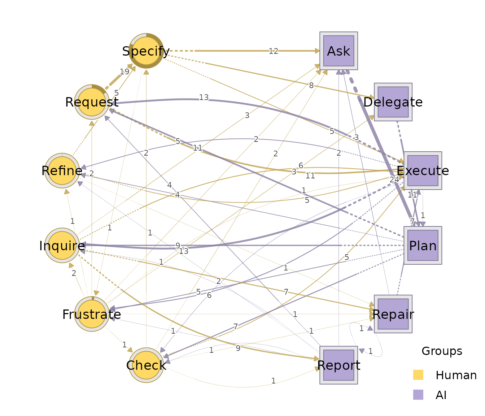
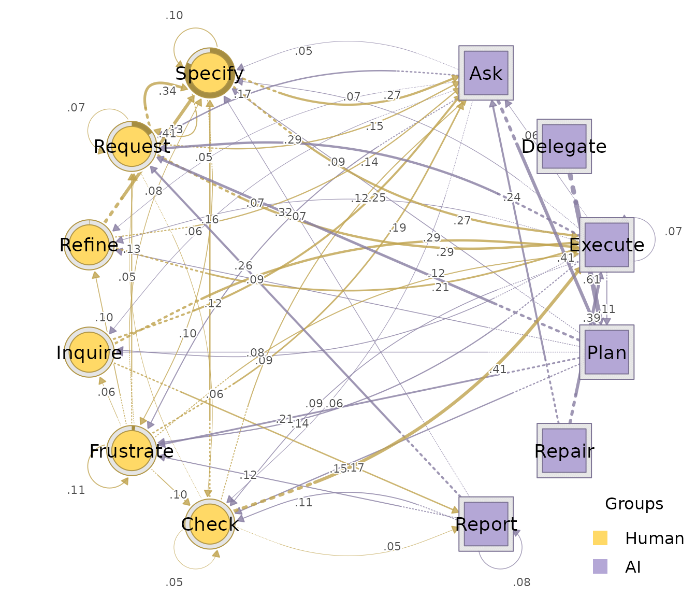

Case study: help-seeking in vibe coding
Written by Mohammed Saqr and Sonsoles López-Pernas
Source:vignettes/articles/case-vibe-coding.Rmd
case-vibe-coding.RmdIn “vibe coding” a programmer describes what the software should do and an AI coding agent writes, runs and repairs the code. Programming becomes a sequence of requests, specifications, checks and complaints addressed to the agent, interleaved with the agent’s plans, actions, questions and reports. How programmers seek help in this setting, and how the agent’s moves shape what they do next, is a question about the process of the interaction: it concerns which moves follow which, within and across the two actors. Rinja et al. (2027) studied help-seeking in student-AI programming interactions from this perspective with heterogeneous transition network analysis.
This case study follows that line of analysis on the bundled sessions. It asks how the programmers distribute their moves, how the agent responds to each kind of request, which agent moves are followed by frustration, what turn-taking patterns recur, and whether the conclusions are stable. It does not reproduce the published study and its numbers.
Data
human_ai holds 19,347 coded events from 429 vibe-coding
sessions. Each code belongs to one actor, as recorded in the codebook
human_ai_codebook.
-
Session and order:
session_id,order_in_session. -
Human codes:
Specify,Request(merging the original codes Command and Request),Check(Correct and Verify),Inquire,RefineandFrustrate(Frustrate and Interrupt). -
AI codes:
Plan,Execute,Ask(merging Ask, Investigate and Inquire),Report(Explain and Report),RepairandDelegate.
human_ai_codebook
#> code actor_type
#> 1 Specify Human
#> 2 Request Human
#> 3 Frustrate Human
#> 4 Check Human
#> 5 Inquire Human
#> 6 Refine Human
#> 7 Delegate AI
#> 8 Plan AI
#> 9 Execute AI
#> 10 Ask AI
#> 11 Repair AI
#> 12 Report AIThe network is built from the data and the codebook, which assigns each code to its actor.
net <- build_htna(human_ai, node_groups = human_ai_codebook)How the actors divide their activity
frequencies_htna(net)
#> group state count proportion
#> 1 AI Execute 3258 0.3810
#> 2 Human Request 3104 0.2875
#> 3 Human Specify 2920 0.2705
#> 4 AI Ask 2416 0.2825
#> 5 Human Frustrate 1829 0.1694
#> 6 AI Plan 1620 0.1895
#> 7 Human Check 1298 0.1202
#> 8 Human Inquire 853 0.0790
#> 9 Human Refine 792 0.0734
#> 10 AI Report 705 0.0824
#> 11 AI Delegate 295 0.0345
#> 12 AI Repair 257 0.0301The programmers’ moves are mostly directive: Request
(29% of their events) and Specify (27%) together make up
more than half of them, Frustrate follows with 17%, and
questions (Inquire, 8%) are rare. The agent mostly executes
(38% of its events), asks (28%) and plans (19%); it seldom repairs (3%)
or delegates (3%). Help is sought by directing the agent rather than by
asking it.
How the agent responds to each request
The two-step paths from a human code to an AI code show how the agent responds; lift compares each count with the count expected if the two codes followed each other at random.
print(extract_meta_paths(net, schema = "Human->AI"), n = 8)
#> State-level instances of schema 'Human->AI' over 429 sequences
#> Rows: 36 | Lengths: 2 | Gaps: 0
#> schema meta_schema length gap count n_seq support frequency lift
#> Request->Execute Human->AI 2 0 904 299 0.697 0.151 1.77
#> Specify->Execute Human->AI 2 0 796 261 0.608 0.133 1.66
#> Specify->Ask Human->AI 2 0 784 292 0.681 0.131 2.20
#> Check->Execute Human->AI 2 0 534 243 0.566 0.089 2.50
#> Request->Ask Human->AI 2 0 459 222 0.517 0.077 1.21
#> Frustrate->Ask Human->AI 2 0 327 227 0.529 0.055 1.46
#> Inquire->Execute Human->AI 2 0 243 123 0.287 0.041 1.73
#> Inquire->Ask Human->AI 2 0 214 133 0.310 0.036 2.05
#> ... (28 more)Requests and specifications are followed by execution (904 and 796
times), and specifications also often by a question from the agent (784
times, 2.2 times as often as expected). A check is followed by execution
2.5 times as often as expected: the agent responds to a correction by
acting on it. The agent answers questions (Inquire) with
both execution and a question of its own.
What follows the agent’s moves
The reverse paths show what the programmer does after each agent move.
print(extract_meta_paths(net, schema = "AI->Human"), n = 8)
#> State-level instances of schema 'AI->Human' over 429 sequences
#> Rows: 36 | Lengths: 2 | Gaps: 0
#> schema meta_schema length gap count n_seq support frequency lift
#> Execute->Request AI->Human 2 0 921 269 0.627 0.162 1.80
#> Plan->Request AI->Human 2 0 503 268 0.625 0.088 1.98
#> Execute->Frustrate AI->Human 2 0 451 230 0.536 0.079 1.50
#> Ask->Request AI->Human 2 0 409 212 0.494 0.072 1.08
#> Plan->Frustrate AI->Human 2 0 333 197 0.459 0.058 2.22
#> Execute->Inquire AI->Human 2 0 277 150 0.350 0.049 1.97
#> Execute->Check AI->Human 2 0 274 134 0.312 0.048 1.28
#> Ask->Frustrate AI->Human 2 0 273 153 0.357 0.048 1.22
#> ... (28 more)After an execution the programmer most often issues the next request
(921 times, in 269 sessions), and after a plan as well (503).
Frustration is the next most common reaction to an execution (451
times). The schema AI->Frustrate lists every agent move
that precedes frustration.
extract_meta_paths(net, schema = "AI->Frustrate")
#> State-level instances of schema 'AI->Frustrate' over 429 sequences
#> Rows: 6 | Lengths: 2 | Gaps: 0
#> schema meta_schema length gap count n_seq support frequency lift
#> Execute->Frustrate AI->Human 2 0 451 230 0.536 0.381 1.50
#> Plan->Frustrate AI->Human 2 0 333 197 0.459 0.281 2.22
#> Ask->Frustrate AI->Human 2 0 273 153 0.357 0.231 1.22
#> Report->Frustrate AI->Human 2 0 85 67 0.156 0.072 1.30
#> Delegate->Frustrate AI->Human 2 0 31 28 0.065 0.026 1.14
#> Repair->Frustrate AI->Human 2 0 11 11 0.026 0.009 0.46Frustration follows a plan 2.22 times as often as expected, more than it follows an execution (1.50) or a question (1.22), and it rarely follows a repair (lift 0.46). Programmers react against the agent’s plans more than against its actions.
Recurring turn-taking
At the level of actor types, four-step meta-paths show how turns are exchanged.
extract_meta_paths(net, level = "type", length = 4, min_lift = 1)
#> Meta-paths (type-level) over 429 sequences
#> Rows: 9 | Lengths: 4 | Gaps: 0
#> schema length gap count n_seq support frequency lift
#> AI->Human->Human->AI 4 0 2276 389 0.907 0.126 2.07
#> AI->Human->AI->Human 4 0 1984 356 0.830 0.110 1.81
#> Human->AI->Human->AI 4 0 1791 337 0.786 0.099 1.63
#> Human->AI->AI->Human 4 0 1772 394 0.918 0.098 1.61
#> Human->AI->Human->Human 4 0 1718 366 0.853 0.095 1.24
#> Human->Human->AI->Human 4 0 1574 358 0.834 0.087 1.13
#> Human->Human->AI->AI 4 0 1492 391 0.911 0.083 1.36
#> AI->AI->Human->Human 4 0 1110 323 0.753 0.061 1.01
#> AI->AI->Human->AI 4 0 953 333 0.776 0.053 1.10The most over-represented pattern is AI Human Human AI (lift 2.07, in 389 of the 429 sessions): the programmer answers an agent move with two moves of their own before the agent acts again. Patterns that alternate strictly between the actors follow (lifts 1.81 and 1.63). Help-seeking in these sessions is a dialogue of short turns in which the programmer often needs more than one move to redirect the agent.
The paths that start with a question show what a programmer’s question leads to.
print(extract_meta_paths(net, schema = "Inquire->AI->Human"), n = 6)
#> State-level instances of schema 'Inquire->AI->Human' over 429 sequences
#> Rows: 26 | Lengths: 3 | Gaps: 0
#> schema meta_schema length gap count n_seq support frequency
#> Inquire->Execute->Request Human->AI->Human 3 0 73 52 0.121 0.164
#> Inquire->Execute->Inquire Human->AI->Human 3 0 42 31 0.072 0.094
#> Inquire->Ask->Request Human->AI->Human 3 0 41 37 0.086 0.092
#> Inquire->Report->Request Human->AI->Human 3 0 36 30 0.070 0.081
#> Inquire->Ask->Frustrate Human->AI->Human 3 0 32 28 0.065 0.072
#> Inquire->Execute->Frustrate Human->AI->Human 3 0 25 24 0.056 0.056
#> lift
#> 3.31
#> 6.94
#> 2.51
#> 7.55
#> 3.33
#> 1.93
#> ... (20 more)A question answered by an execution is most often followed by a new request (73 times), but a question answered by an execution is also followed by a further question 6.94 times as often as expected, and a question answered by a report by a request 7.55 times as often: answers lead to more questions or to new instructions, in loops.
Which codes broker the interaction
centralities_htna(net, measures = c("InStrength", "Betweenness"))
#> node actor InStrength Betweenness
#> 1 Ask AI 1.527 13
#> 2 Check Human 0.752 0
#> 3 Delegate AI 0.174 0
#> 4 Execute AI 2.034 29
#> 5 Frustrate Human 0.967 2
#> 6 Inquire Human 0.515 14
#> 7 Plan AI 1.250 25
#> 8 Refine Human 0.470 0
#> 9 Repair AI 0.200 0
#> 10 Report AI 0.525 0
#> 11 Request Human 1.693 19
#> 12 Specify Human 1.353 15Execute receives the most transition weight (in-strength
2.03) and lies on the most shortest paths (betweenness 29), followed by
the agent’s Plan (25) and the programmer’s
Request (19). The interaction is held together by the
request-plan-execute cycle.

Are the conclusions stable?
The bootstrap identifies the transitions that the resampled sessions reproduce, and pruning with it keeps only those.
boot <- bootstrap_htna(net, iter = 200, seed = 1)
pruned <- prune_htna(net, method = "bootstrap", boot = boot)
as.data.frame(summary(pruned), what = "actor_pairs")
#> source_actor target_actor n_edges
#> 1 Human Human 18
#> 2 Human AI 17
#> 3 AI Human 22
#> 4 AI AI 11Sixty-eight edges are retained. The AI-to-human block keeps the most (22), so the responses of the programmers to the agent are the best-supported part of the network.
plot_htna(pruned)
Case-dropping asks whether the edge weights hold when sessions are removed.
casedrop_reliability_htna(net, iter = 100, seed = 1)
#> Edge-weight Case-dropping Stability
#> Cases (resampled) : 429
#> Edges assessed : 125 (diagonal excluded)
#> Iterations / prop : 100
#> Correlation method : spearman
#> CS-coefficient (r) : 0.90 (threshold=0.70, certainty=0.95)
#>
#> Model-level reliability across iterations (mean +/- sd per drop):
#> drop_prop p=0.1 p=0.2 p=0.3 p=0.4 p=0.5 p=0.6 p=0.7 p=0.8 p=0.9
#> mean|diff| 0.002+- 0.000 0.003+- 0.000 0.004+- 0.000 0.006+- 0.001 0.007+- 0.001 0.008+- 0.001 0.010+- 0.001 0.014+- 0.002 0.021+- 0.003
#> median|diff| 0.001+- 0.000 0.002+- 0.000 0.003+- 0.000 0.003+- 0.000 0.004+- 0.001 0.005+- 0.001 0.006+- 0.001 0.009+- 0.001 0.013+- 0.002
#> cor 0.998+- 0.001 0.996+- 0.001 0.994+- 0.002 0.991+- 0.002 0.988+- 0.003 0.982+- 0.005 0.972+- 0.006 0.957+- 0.011 0.911+- 0.022
#> max|diff| 0.017+- 0.007 0.023+- 0.006 0.032+- 0.012 0.039+- 0.012 0.048+- 0.014 0.059+- 0.016 0.074+- 0.021 0.098+- 0.033 0.143+- 0.041The edge weights keep a rank correlation above 0.7 until 90% of the sessions are dropped (CS coefficient 0.90), so the transition structure described above is not carried by a few sessions.
Conclusion
Programmers in these sessions sought help by directing the agent: requests and specifications dominate their moves, and questions are rare. The agent answers requests and checks by executing, and the programmers answer executions and plans with further requests or with frustration, the latter most often after a plan. The exchange runs in short turns, with the programmer often making two moves before the agent acts again, and the structure is stable under resampling and case-dropping.
References
Rinja, D., Oliveira, E. A., López-Pernas, S., Saqr, M., Specht, M., & Misiejuk, K. (2027). Unpacking vibe coding: Help-seeking processes in student-AI interactions while programming. In Artificial Intelligence in Education: 27th International Conference, AIED 2026. Springer Nature Switzerland. https://doi.org/10.1007/978-3-032-29763-1_35